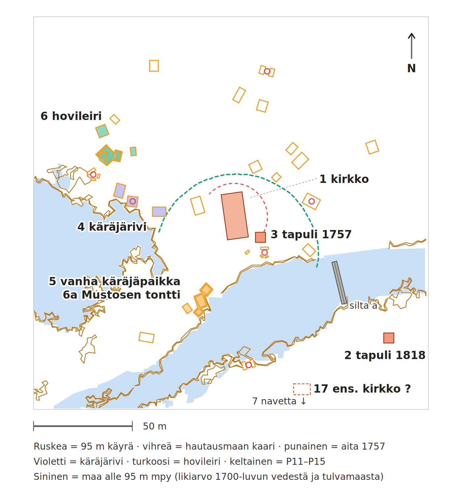
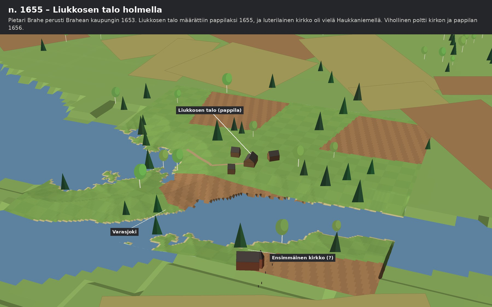
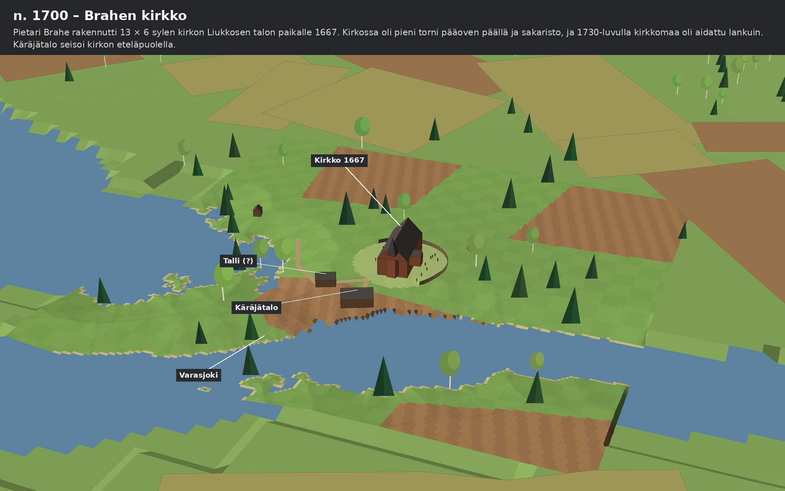
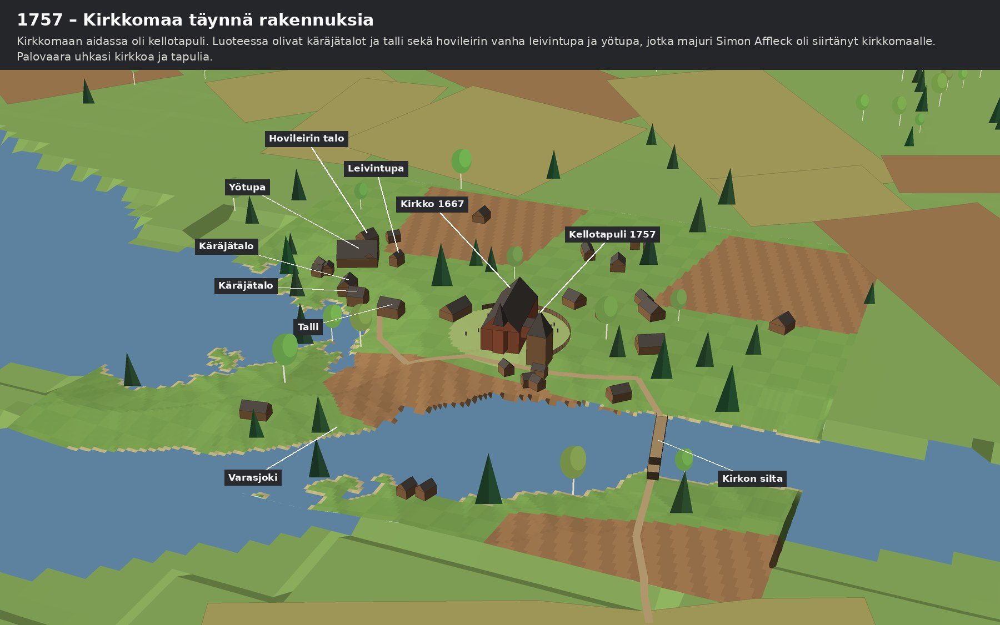
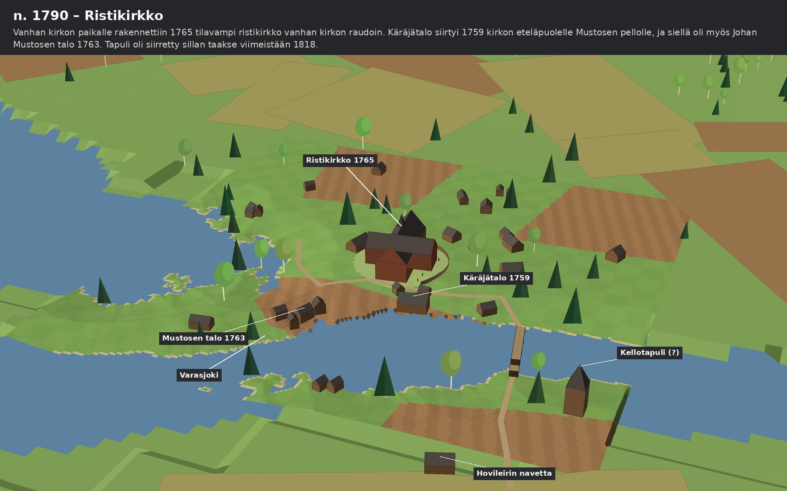
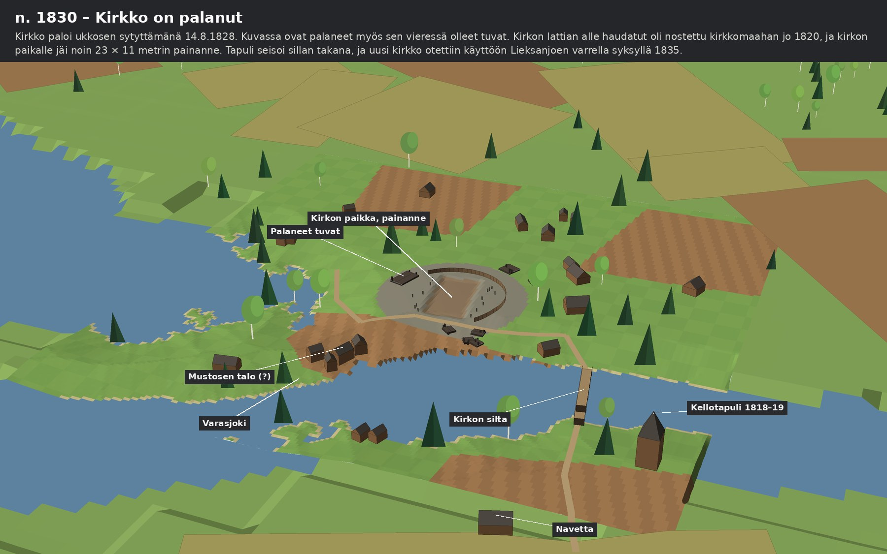

Brahea · havainnekuvat · 29.10.2026
Lieksan vanha kirkko ja sen naapurit 1655–1830
Lieksan vanha kirkko seisoi Varasjoen pohjoisrannalla matalalla saarekkeella vuodesta 1667 vuoteen 1828. Ympärillä oli käräjätaloja, hovileirin tupia, kirkkotupia ja kellotapuli, ja ne vaihtoivat paikkaa vuosikymmenten mittaan. Asiakirjoista tiedän, mitä missäkin oli, mutta lukijan on vaikea hahmottaa sitä pelkistä sylimitoista ja ilmansuunnista. Siksi piirsin paikan viitenä ajankohtana samasta kulmasta katsottuna.
Kuvat ovat havainnekuvia eivätkä rekonstruktioita. Rakennusten paikat ja koot tulevat asiakirjoista ja laserkeilauksesta, mutta seinien korkeudet, kattojen kulmat, pellot, puut ja tiet olen lisännyt itse, jotta maisema näyttäisi maisemalta. Kerron kunkin kuvan kohdalla, mikä on asiakirjasta ja mikä on minun oletukseni.
Kuvat kokoavat yhteen Brahea-sarjan aiemmat tulokset. Tärkein pohja on tutkimusraportti Missä Brahea seisoi, joka käy kirkon, kellotapulin, käräjätalojen, hovileirin, Johan Mustosen tontin ja pappiloiden paikat läpi yksi kerrallaan. Siinä jokaisella paikalla on oma asiakirjansa: Karjalan tuomiokunnan tuomiokirjat 1729–1783, kirkon kalustoluettelo 1730-luvun lopulta, pitäjänkokousten pöytäkirjat 1764–1813 ja kirkkoherra Jaakko Steniuksen luonnos vuodelta 1778. Kirkon ja tapulin paikat näkyvät myös vuosien 1818–1819 verollepanokartalla, ja vuosien 1838–1840 isojakokartalta kirkko jo puuttuu.
Kaksi muuta artikkelia täydentää kuvaa. Ketkä makaavat Varasjoen suulla kertoo, että kirkon lattian alle haudatut nostettiin kirkkomaahan vuonna 1820 ja että kirkonpaikalla näkyy laserkeilauksessa noin 23 × 11 metrin painanne. Kirkko siirrettiin kertoo palosta 14.8.1828 ja siitä, miksi uutta kirkkoa ei rakennettu vanhalle paikalle.
Rakennusten paikat ovat Maanmittauslaitoksen laserkeilausaineistosta. Kävin kirkkomäen läpi ja merkitsin 46 suorakaidetta, jotka sopivat rakennuksen pohjaksi, sekä tulisijaksi sopivat kummut. Samasta aineistosta on 95 metrin korkeuskäyrä, jonka alapuolinen maa on kuvissa vettä tai tulvamaata. Laserkeilaus ei kerro, minkä ikäinen pohja on. Siksi pohja saa kuvissa rakennuksen vain silloin, kun asiakirja sijoittaa samaan kohtaan rakennuksen kyseisenä aikana. Kirkkotuvat ovat tästä poikkeus, sillä niitä ei mainita Pielisjärven asiakirjoissa nimeltä.
Lähialueen ulkopuolinen maisema on avoimista aineistoista: vesistöt OpenStreetMapista ja maaston muodot avoimesta korkeusmallista. Ne kuvaavat nykyistä tilannetta, joten rannat ovat säännöstelyn ja ruoppausten jälkeiset.
Kartassa ovat kaikki kirkkomäen rakennuspohjiksi sopivat suorakaiteet, lukuun ottamatta niitä viittä, jotka ovat kirkkomaan aidan sisällä ja kuuluvat todennäköisesti itse kirkkoon. Numerot ovat samat kuin raportissa Missä Brahea seisoi. Värit kertovat, mihin rakennukseen pohjan tulkitsen: violetit käräjätalojen riviin, turkoosit hovileiriin ja keltaiset Johan Mustosen taloryhmään. Oranssit ääriviivat ilman täyttöä ovat pohjia, joille ei ole asiakirjaa.

| Vuosi | Tapahtuma |
|---|---|
| 1617–1656 | Ensimmäinen luterilainen kirkko Haukkaniemellä; tarkka paikka avoin |
| 1653 | Pietari Brahe perustaa Brahean kaupungin |
| 1655 | Mårten Liukkosen talo määrätään Brahean pappilaksi |
| 1656 | Vihollinen polttaa kirkon, pappilan ja talonpoikaistaloja |
| 1667 | Pietari Brahe rakennuttaa uuden kirkon saarekkeelle Liukkosen talon paikalle |
| n. 1705–1725 | Majuri Simon Affleck siirtää hovileirin rakennukset kirkkomaalle |
| n. 1737 | Käräjätalot siirtyvät kirkon eteläpuolelta kirkkomaan viereen |
| 1757 | Käräjäpöytäkirja mittaa kirkon, aidan, tapulin, käräjätalojen ja hovileirin tupien etäisyydet |
| 1759 | Uudet käräjätalot saa rakentaa kirkkomaan eteläpuolelle Mustosen pellolle |
| 1763 | Johan Mustosen päärakennus ja navetta mainitaan maariidassa |
| 1765 | Vanhan kirkon paikalle rakennetaan tilavampi ristikirkko |
| 1813 | Pitäjänkokous puhuu sillasta kirkon ja tapulin välillä |
| 1818–1819 | Verollepanokartalla kirkko pohjoisrannalla ja tapuli sillan takana |
| 1820 | Kirkon lattian alle haudatut nostetaan kirkkomaahan |
| 14.8.1828 | Kirkko palaa ukkosen sytyttämänä |
| 1835 | Uusi kirkko otetaan käyttöön Lieksanjoen varrella; vihitään 23.8.1840 |
Kaikki viisi kuvaa on piirretty samasta kulmasta kaakosta, Varasjoen eteläpuolelta noin 175 metrin korkeudelta, ja katse on kohti luodetta. Etualalla on Varasjoki ja kirkon silta, keskellä kirkkomäki ja vasemmalla Kevätlahden suuntaan avautuva lahti.

Pietari Brahe oli perustanut kaupungin kaksi vuotta aiemmin. Kesäkuussa 1655 Mårten Liukkosen talo määrättiin Brahean pappilaksi, ja pidän todennäköisimpänä, että talo oli saarekkeella myöhemmän kirkon kohdalla tai sen vieressä. Brahean oma kirkko oli rakenteilla, mutta sen hirsiä ei ollut vielä tuotu tammikuussa 1656. Vanha luterilainen kirkko oli Haukkaniemellä. Vuonna 1656 vihollinen poltti kirkon, pappilan ja muutamia talonpoikaistaloja.
Kuvassa: Liukkosen talon pihapiiri saarekkeella ja ensimmäinen kirkko kalmistoineen. Ensimmäisen kirkon paikka on epävarmin kaikista: Steniuksen luonnoksen välimatka ja kalapadon niemi osoittavat eri kohtiin, ja kuvassa kirkko on raportin kohteen 17 kohdalla. Talon rakennukset ovat keksittyjä, sillä asiakirjat kertovat vain, että talo oli olemassa. Siltaa ei ole, koska sitä ei mainita.

Kirkkoherra Steniuksen mukaan kreivi Pietari Brahe rakennutti vuonna 1667 en ansenligare Kyrka på en Holme (huomattavamman kirkon kohoumalle). Kalustoluettelon mukaan kirkko oli 13 syltä pitkä ja 6 syltä leveä eli noin 23 × 11 metriä, pääoven päällä oli pieni torni, ovia oli kolme ja sakaristossa pieni ikkuna. Kirkkomaa oli aidattu lankuin. Käräjätalo seisoi tuohon aikaan kirkon eteläpuolella. Vuoden 1757 pöytäkirja muistaa paikan: Söder om Kyrckan, som nu är inom Hoflägrets Åker (kirkon eteläpuolella, joka on nyt hovileirin peltoa).
Kuvassa: kirkko torneineen ja sakaristoineen, aita, käräjätalo ja sen vieressä talli sekä osa kirkkotuvista. Kalustoluettelo on 1730-luvulta, joten aita on kuvassa oletus. Tallin olemassaolo on päätelty vuoden 1757 käräjärivistä, ja kirkkotupien määrä on arvio. Hovileiri ei ollut vielä kirkkomaalla.

Vuoden 1757 käräjillä mitattiin, kuinka lähelle kirkkoa Sigfred Mustonen aikoi rakentaa. Pöytäkirjasta saa koko kirkkomäen asetelman. Käräjätalojen rivin nurkasta eli tallista oli kirkon aitaan 14 syltää, Mustosen aiottu rakennus olisi tullut 4 sylen ja 1 kyynärän päähän käräjätalosta, ja hovileirin vanha leivintupa ja yötupa olivat siitä 6 sylen päässä. Kellotapuli oli kiinni kirkkomaan aidassa samalla puolella jokea kuin kirkko. Palovaara uhkasi käräjätaloja, kirkkoa ja kallista tapulia, ja siksi Mustosen rakennushanke päätyi käräjille. Kaksi vuotta myöhemmin todettiin, että majuri Simon Affleck oli siirtänyt hovileirin rakennukset kirkkomaalle omin päin.
Kuvassa: kirkko, tapuli aidassa, aita tapulilta pohjoisen kautta luoteeseen, kaksi käräjätaloa ja talli, hovileirin leivintupa, yötupa ja talo sekä kirkon silta. Mitat ja naapuruudet ovat pöytäkirjasta, mutta suunta on minun valintani: pöytäkirja sanoo vain, ettei rivi ollut kirkon eteläpuolella, ja sijoitin sen luoteeseen, koska pohjat tihenevät siellä. Rakennusten nimet on osoitettu pohjille etäisyyksien perusteella. Silta mainitaan asiakirjoissa vasta 1763, joten tässä kuvassa se on oletus.

Joulukuussa 1764 pitäjänkokous päätti rakentaa uuden kirkon seuraavana kesänä, ja helmikuussa 1765 vanha kirkko todettiin gamla och nog trånga (vanhaksi ja liian ahtaaksi). Uusi ristikirkko nousi samalle paikalle, ja vanhan kirkon raudat käytettiin siihen. Käräjätalot olivat jo siirtyneet: vuonna 1759 sovittiin, että ne saa rakentaa å Södra sidan af Kyrckiowallen innom Mustosers åkergård (kirkkomaan eteläpuolelle Mustosten pellon sisään). Vuoden 1763 maariidassa mainitaan Johan Mustosen päärakennuksen tontti vähän kirkon sillan alapuolella ja hovileirin vanha navetta, joka oli Varasjoen toisella puolella sillasta alavirtaan.
Kuvassa: ristikirkko, käräjätalo kirkon eteläpuolella, Mustosen taloryhmä joen rannalla, navetta ja kellotapuli sillan takana. Ristikirkon muoto ja mitat ovat oletus, sillä asiakirjoista tiedän vain, että kirkko oli edeltäjäänsä tilavampi. Tapuli on vuosien 1818–1819 verollepanokartalla sillan takana, mutta siirtoaika on päätelmä: tapuli rakennettiin uudelleen tai siirrettiin todennäköisesti uuden kirkon yhteydessä. Hovileiri puuttuu kuvasta, koska asiakirjat sijoittavat sen kirkkomaalle vain vuosina 1757–1759.

Huhtikuussa 1820 pitäjänkokous päätti, että Liken bora från kyrkan upptagas och i kyrkojorden nedsättas (ruumiit on nostettava kirkosta ja laskettava kirkkomaahan). Kahdeksan vuotta myöhemmin, 14.8.1828, kirkko paloi ukkosen sytyttämänä. Elias Lönnrot oli ollut kirkossa neljä päivää aiemmin. Pitäjänkokous piti vanhaa paikkaa jo seuraavana keväänä ahtaana ja paloalttiina, ja uusi kirkko otettiin käyttöön Lieksanjoen varrella syksyllä 1835. Vanha kirkon paikka oli vielä 1837 erikseen katselmoitavissa, mutta vuosien 1838–1840 isojakokartalta kirkko jo puuttuu.
Kuvassa: kirkon paikalla on noin 23 × 11 metrin painanne, joka näkyy nykyisessäkin laserkeilauksessa, ja ympärillä on palanutta maata. Kellotapuli, silta ja navetta ovat pystyssä. Kirkon viereiset tuvat on piirretty palaneiksi, mutta se on oletus: en ole löytänyt asiakirjaa, joka kertoisi palon levinneen. En tiedä myöskään, säilyikö Mustosen taloryhmä noin 40 metrin päässä kirkosta, joten nimen perässä on kysymysmerkki.
Otan mielelläni vastaan korjauksia, erityisesti asiakirjoja, jotka kertovat rakennusten ulkonäöstä, ristikirkon mitoista tai vuoden 1828 palon laajuudesta.
Vapaasti luettavissa ja jaettavissa lähde mainiten.